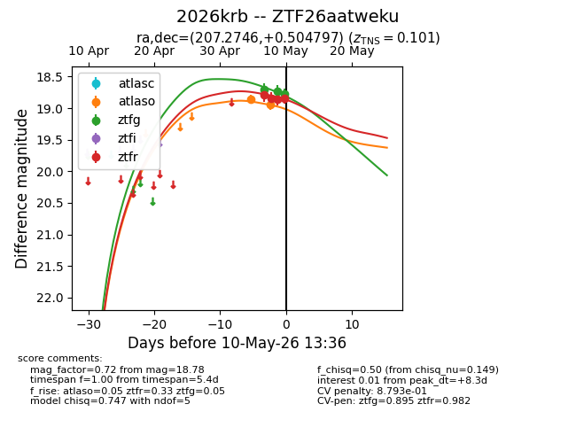
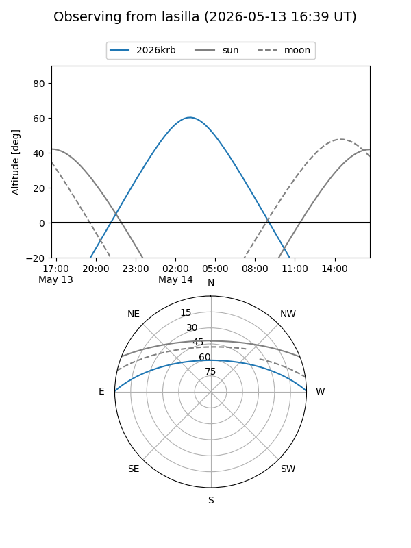
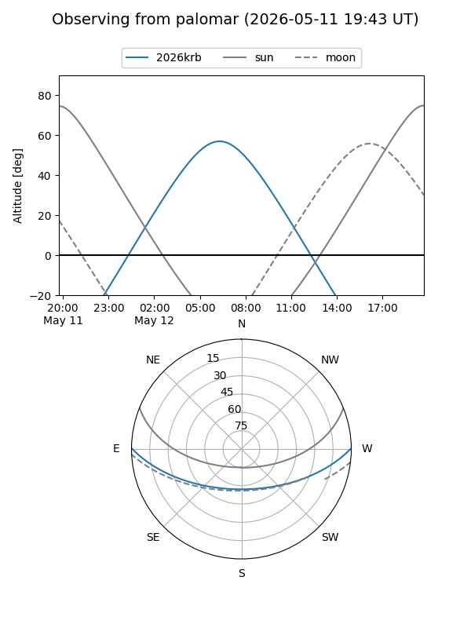
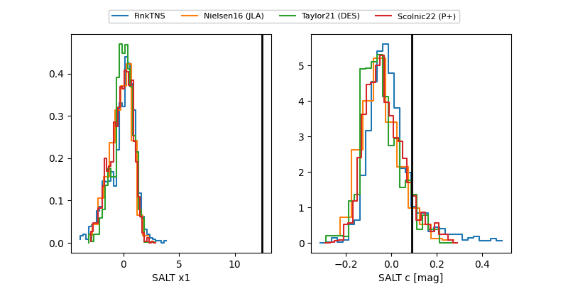

2026krb
Target 2026krb at 2026-05-10 13:41
Aliases and brokers:
FINK: link
Lasair: link
ALeRCE: link
TNS: link
YSE: link
alt names
ZTF26aatweku (ztf,fink_ztf)
2026krb (tns,yse)
Coordinates:
equatorial (ra, dec) = 207.2746,+0.50480
equatorial (HMS+DMS) = 13:49:05.91,+00:30:17.27
galactic (l, b) = (332.7830,+59.99168)
Flags:
confirmed ia
likely cv
Photometry:
last atlaso=18.94, ztfg=18.78, ztfr=18.85
2 atlaso, 3 ztfg, 4 ztfr detections
Lightcurve

Visibility


Additional plots
